メンバー
- HOME
- メンバー
ROIS
-
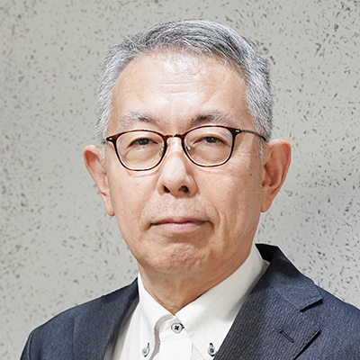
- PI&MW&POC
- センター長・特任教授
- 石川 裕
-
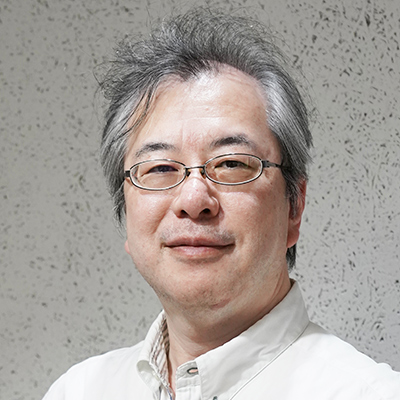
- HW
- 副センター長・教授
- 五島 正裕
-
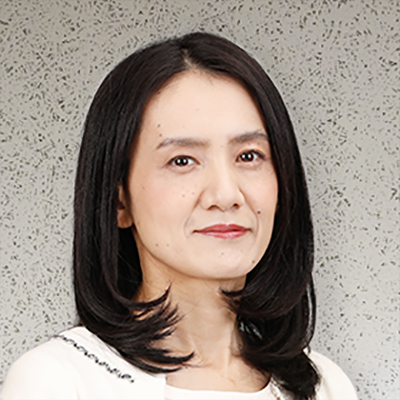
- MW&PoC
- 副センター長・教授
- 竹房 あつ子
-
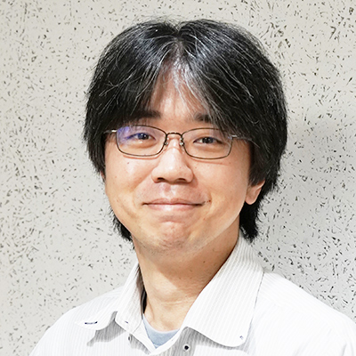
- Th
- 副センター長・准教授
- 関山 太朗
-
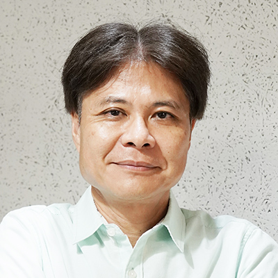
- IC (OS)
- 副センター長・客員教授
- 河野 健二
-
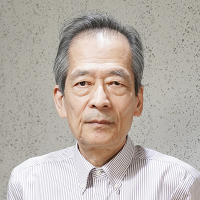
- Th
- 特任教授
- 大堀 淳
-
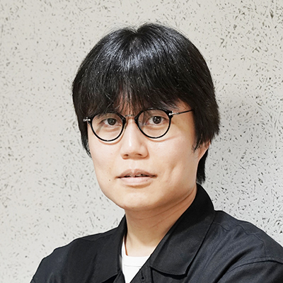
- HW
- 研究員
- 大畑 幸矢
ROIS RA
-
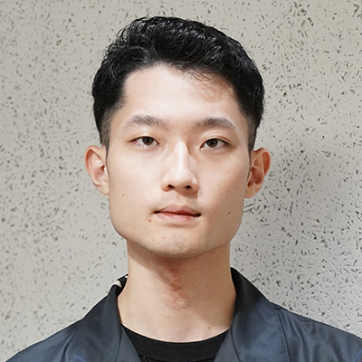
- HW
- リサーチ アシスタント
- 内山 一秀
-
- HW
- リサーチ アシスタント
- 松見 湧斗
-
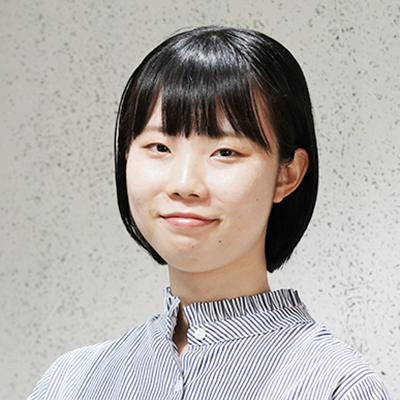
- MW
- リサーチ アシスタント
- 佐々木 怜名
-
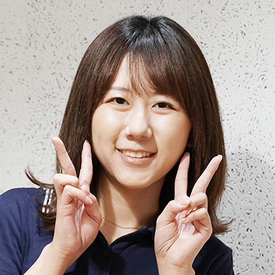
- MW
- リサーチ アシスタント
- 喜多 陽花
Visiting
-
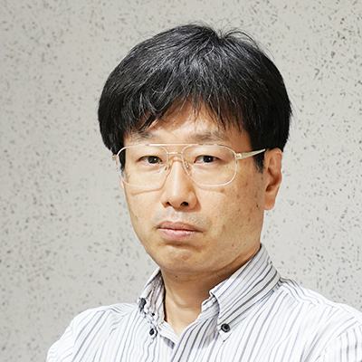
- IS (HW)
- 客員教授
- 古川 潤
-
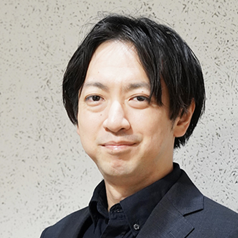
- IS (HW)
- 客員准教授
- 高前田 伸也
-
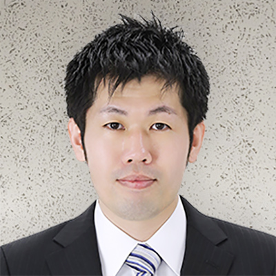
- IS (HW)
- 客員准教授
- 塩谷 亮太
-
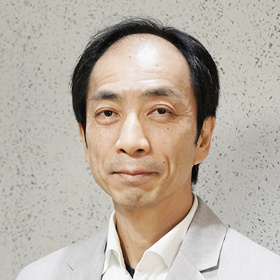
- IS (HW)
- 客員教授
- 木村 啓二
-
- IS (OS)
- 客員教授
- 光来 健一
-
- IS (ATT)
- 客員教授
- 須崎 有康
-
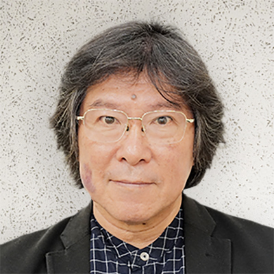
- MW&PoC
- 客員教授
- 中條 拓伯
-
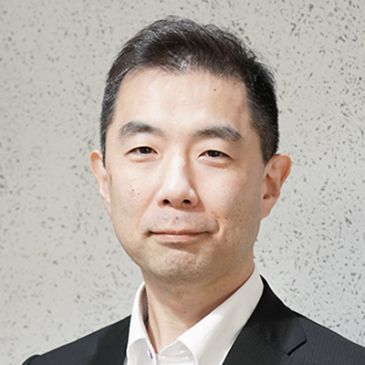
- IS (MW)
- 客員講師
- 宮澤 慎一
-
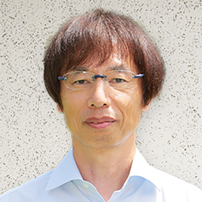
- OS&MW
- 客員教授
- 光澤 敦
-
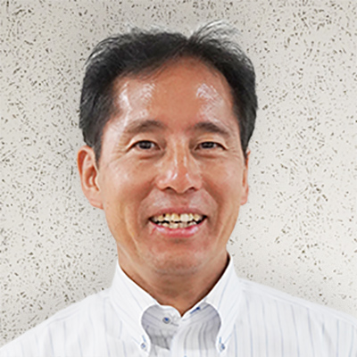
- MW
- 客員教授
- 小口 正人
-
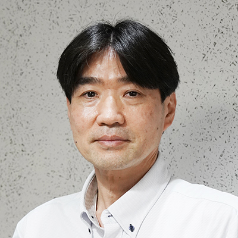
- Th
- 客員教授
- 小林 直樹
-

- OS
- 畑 輝史
-
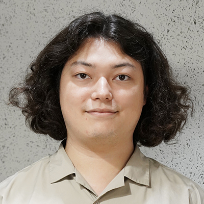
- MW&PoC
- 高田 勝悟
-
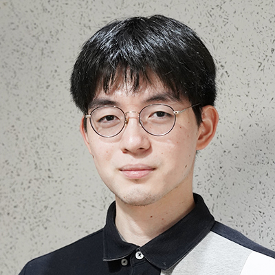
- MW&PoC
- 橋本 浩一
| HW | Hardware |
|---|---|
| OS | System Software |
| TH | Theory |
| ATT | Attestation |
| MW | Middleware |
| PoC | Proof of Concept |
| IC | International collaboration |
| IS | International standardization activities |